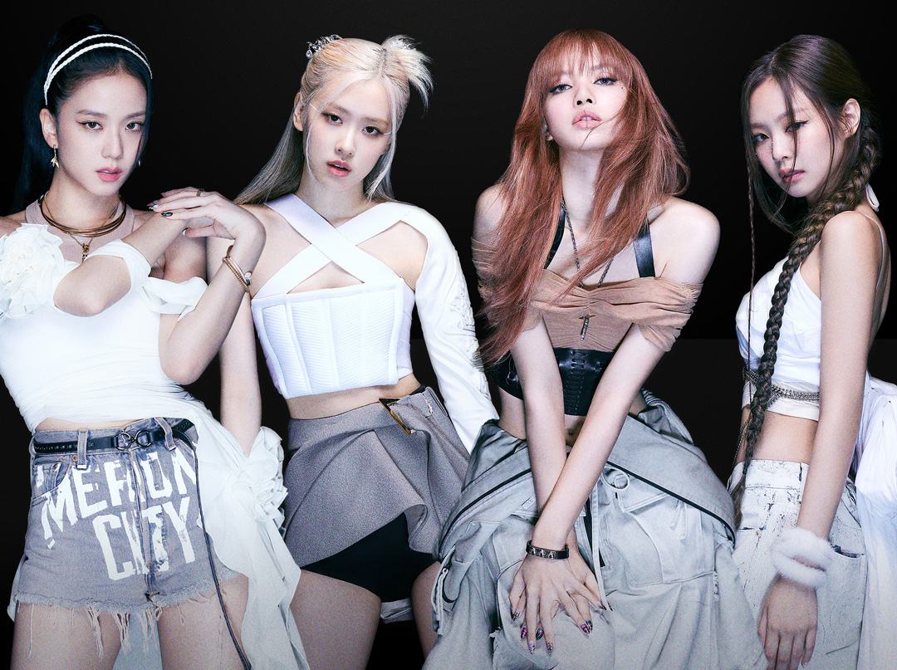

Blackpink is the revolution

Born Pink
Pink Venom
"first single"

Pink Venom es un tema lleno de sonidos potentes que se fusionan con instrumentos propios de la música coreana. Además, el hip-hop está muy presente en toda la canción.
Pink venom ha sido una cancion que ha impacto a todos los blinks (nombre del fandom) ya que, cada una de las cantantes se descantan y demuestran su talento individual para psteriormente mostrar su talento colectivo
Jennie mencionó que en PINK VENOM buscaron reflejar los encantos de BLACKPINK que llegan a ser contrastantes. Capturar el 'veneno encantador' a través de la música y la coreografía.
Shut Down
"Second Single"

«Shut Down» es una canción del grupo surcoreano Blackpink. Fue lanzada el 16 de septiembre de 2022 a través de YG Entertainment e Interscope Records, como el sencillo principal de su segundo álbum de estudio surcoreano de larga duración del grupo, titulado Born Pink.
Shut Down de BLACKPINK es una mezcla de la melodía La Campanella del famoso violinista Niccolo Paganini con un toque de hiphop donde cada una de las integrantes mostró su talento para el rap.
En el caso de Rosé, la cantante mencionó que en Shut Down buscaron fusionar objetos y puntos que habían aparecido anteriormente en su carrera, como pequeños guiños a su pasado. Asegurando que seguramente BLINK fue muy feliz al reconocer esos detalles.

Blackpink
in your area
Miembros
-
 Jisoo
Jisoo
Jisoo es conocida por su encanto y personalidad dulce y amable.
También es admirada por su estilo y elegancia, lo que la ha llevado a ser imagen de varias marcas de moda. -
 Jennie
Jennie
Jennie es admirada por su talento y carisma en el escenario, y por su personalidad enérgica y divertida fuera de él. -
 Rosé
Rosé
Rose es admirada por su talento vocal y su habilidad en el baile, así como por su personalidad amable y alegre. -
 Lisa
Lisa
Lisa es admirada por su talento en el baile y su carisma en el escenario, así como por su personalidad divertida y amable fuera de él.
Tags
K-pop Loki Tokio Corea del sur Midgard Odin baile Ragnarok Regresar Blackpink Paranormal Dizfras YG Muñecas que hablan
Follow Me
Subscribe
Enter your e-mail below and get notified on the latest blog posts.